In China Employee Termination (2026): Role-Relay and Exception-Routing SOP for Foreign Employers
Key takeaways
- The safest operating model for in China employee termination is not a date countdown but a role relay: HR → Manager → Legal → Payroll → EOR.
- Each handoff should carry a fixed package: case facts, evidence status, decision note, payment scope, and communication script.
- Exception routing must be separate from normal flow. Disputed items should be diverted to an exception lane instead of being mixed into routine payroll release.
- Most costly failures come from “cross-role drift” (different teams using different assumptions), not from arithmetic errors alone.
- Foreign employers can reduce dispute exposure by locking role responsibilities, evidence gates, and system audit trails.
What changed and why this model matters now
For multinational employers, termination in China is rarely a single legal question. It is an execution chain that crosses internal teams and, in many cases, an EOR or outsourced payroll provider. Traditional guides often emphasize legal principles or countdown timelines. In real operations, however, the bigger failure point is handoff quality: HR collects facts but managers provide incomplete records; legal has concerns but payroll only sees a payout instruction; EOR receives a late package without clear exception tags.
A role-relay model addresses this reality. Instead of asking one team to “own everything,” it assigns one controlled decision at each stage and requires that unresolved issues be routed to a dedicated exception path. This article focuses on that practical operating design, using the legal baseline as guardrails and translating it into day-to-day execution for foreign employers.
Regulatory baseline (concise, operations-focused)
The PRC Labor Contract Law remains the primary statutory anchor for termination basis, compensation logic, and dispute sensitivity. For operations teams, this means every case file should show a traceable legal basis and evidence package before settlement is finalized. The Social Insurance Law continues to matter at offboarding because contribution and closure obligations can affect final month processing and post-exit compliance records.
On tax operations, practical withholding treatment for compensation components should be reviewed under current IIT practice references. External advisers continue to flag that outcomes depend heavily on documentary consistency and local enforcement expectations. In other words, legal rules set direction, but operational quality determines whether the case stays controlled.
Operating architecture: role relay with gated handoffs
The core principle is simple: each role only passes the case forward when its own control gate is complete. If a gate fails, the case is routed to an exception lane, not force-pushed forward.
Relay Stage 1 — HR intake and basis framing
HR starts the case with a structured intake note: termination trigger, legal basis category, employee profile, contract status, and known risk flags. HR must also open an evidence checklist and mark each item as available, pending, or disputed.
Output package to Manager:
- basis summary (plain language + policy/legal reference)
- evidence checklist status
- draft communication boundaries (what can/cannot be promised)
- preliminary payout component map (salary, accrued items, potential compensation buckets)
If any core fact is missing, HR flags “exception candidate” before manager review.
Relay Stage 2 — Manager factual confirmation
Manager ownership is factual, not legal. The manager confirms performance/behavior records, business rationale materials, and chronology consistency with HR intake. This step is where many foreign employers fail because managers submit narrative claims without attachable records.
Output package to Legal:
- validated fact pack (or explicit gaps)
- manager attestation on record authenticity
- operational impact note (handover, access closure, team continuity)
If manager facts conflict with HR basis framing, the case cannot move as standard flow and must be marked for exception routing.
Relay Stage 3 — Legal risk calibration and boundary setting
Legal does not run payroll; legal defines risk boundaries. The legal function reviews basis defensibility, evidence sufficiency, communication risk, and dispute likelihood. Legal outputs a “permitted settlement envelope”: what is clear to release, what must be conditionally held, and what language constraints must apply in communications.
Output package to Payroll:
- legal risk note (clear/conditional/contested components)
- approved communication boundary
- escalation threshold triggers
If defensibility is weak or facts are contradictory, legal sends the case to exception lane with required remediation actions.
Relay Stage 4 — Payroll component control and release decision
Payroll receives a bounded package, not open-ended instructions. Payroll decomposes final pay into components and tags each as releasable, held, or pending external confirmation. Manual overrides must require recorded authority.
Output package to EOR/vendor execution (if applicable):
- component-level payout file with status tags
- withholding and contribution treatment notes
- approval hash and version stamp
- employee communication release version
Payroll should never absorb unresolved legal disagreement by simply “processing what was requested.”
Relay Stage 5 — EOR/vendor execution and closure evidence
Where EOR is involved, EOR executes only the approved component map and returns closure evidence: payment proof, communication dispatch records, and issue logs. EOR should also confirm unresolved items remain in exception queue and were not accidentally included.
Closure pack back to employer control owner:
- execution confirmation
- variance report (planned vs actual)
- unresolved exceptions register
- archive completeness checklist
Exception routing model: divert, isolate, resolve, then release
Exception routing is the second backbone of this model. It is not a “special note” in email; it is a separate controlled path with owners and SLAs.
Exception trigger types
- Basis conflict: HR basis and manager facts do not align.
- Evidence deficiency: required records missing, unverifiable, or inconsistent.
- Communication mismatch: drafted employee messaging exceeds legal-approved boundary.
- Payment ambiguity: component tax or compensation treatment not conclusively aligned.
- Authority breach: manual payroll change requested without proper approval path.
Exception lane mechanics
- Assign an exception owner (usually HR compliance lead or legal ops lead).
- Freeze contested components from normal release package.
- Keep uncontested components eligible only if policy permits and approval chain is complete.
- Set resolution SLA by risk level (high/medium/low), with mandatory status logs.
- Re-enter normal relay only after remediation evidence is attached and re-approved.
Communication rule during exception state
Use controlled language: acknowledge review status, confirm committed next update point, and avoid promising final amounts until boundary checks are complete. This lowers misrepresentation risk and reduces avoidable escalation.
Daily operations SOP (role-by-role)
- HR opens standardized case file and basis mapping.
- Manager submits factual attachments and attestation.
- Legal issues release boundary memo.
- Payroll builds component matrix with status tags.
- EOR executes approved map and returns proof.
- Exception owner tracks unresolved components to closure.
- Control owner conducts close-out review and archives evidence.
This sequence is intentionally role-based. It can run quickly, but speed comes from clean relay discipline, not from skipping gates.
Required document checklist (with owner mapping)
- Employment contract and amendments (HR)
- Termination basis memo and policy reference (HR + Legal)
- Manager factual records and attestation (Manager)
- Legal boundary memo (Legal)
- Component payout worksheet with versioning (Payroll)
- IIT and social insurance treatment notes for final package (Payroll)
- Employee communication script and sent record (HR/Legal/EOR)
- Payment execution proof and reconciliation (EOR/Payroll)
- Exception register with disposition notes (Exception owner)
- Final archive index and access log (HR operations)
System implementation notes (controls and auditability)
Foreign employers should encode this model into systems, not just SOP documents.
- Add a mandatory role-stage field so no case can jump directly to payroll execution.
- Require component status tagging (releasable/held/pending) in payroll interface.
- Enforce approval matrix binding: authority levels tied to component risk and amount.
- Activate immutable version history for worksheets and communication templates.
- Maintain an exception dashboard showing age, owner, root cause, and recurrence.
- Lock final release on missing legal boundary memo where legal review is required by policy.
These controls convert abstract compliance intent into measurable process behavior.
Common mistakes and how to prevent them
Mistake 1: “Single-owner illusion.” One function tries to push the case end-to-end.
Prevention: enforce stage completion evidence per role before handoff.
Mistake 2: Mixing disputed and undisputed amounts in one payout instruction.
Prevention: mandatory component-level exception tags and separate release path.
Mistake 3: Manager narrative without verifiable attachments.
Prevention: no legal review entry unless manager attestation package is complete.
Mistake 4: Payroll receiving policy debate instead of bounded instruction.
Prevention: legal must deliver explicit release envelope, not open commentary.
Mistake 5: EOR treated as downstream executor with no feedback loop.
Prevention: require variance reporting and unresolved-item confirmation back to control owner.
What to do now (action checklist)
- Map your current termination flow to HR→Manager→Legal→Payroll→EOR relay stages.
- Define one minimum handoff packet template for each stage.
- Build exception triggers into your case tracker (basis, evidence, communication, payment, authority).
- Separate contested components from routine payroll release by design.
- Set owner + SLA rules for exception lane and weekly governance review.
- Update communication templates to reflect exception-state language controls.
- Add three KPI groups: handoff quality, exception aging, post-exit dispute signals.
- Run one tabletop simulation with a cross-border case and document control gaps.
What to watch next
Foreign employers should continue monitoring local practice shifts in evidence expectations and dispute handling emphasis. Even when statutory language is stable, enforcement behavior and evidentiary thresholds can move over time. The most resilient strategy is to keep legal interpretation concise but keep operations controls detailed, testable, and role-accountable.
Source-fit reassessment for this structure
Because this rewrite uses a role-relay + exception-routing model, source adequacy was re-evaluated beyond the prior fixed four-link set. The baseline statutes remain necessary, but they are not sufficient to support executable cross-role controls. This version therefore adds and re-weights sources in three layers: (1) statutory and judicial anchors (Labor Contract Law, Implementation Regulation, SPC interpretation), (2) operations-side treatment references (social insurance and IIT handling), and (3) recent multinational practice references (Littler and China Briefing) to translate legal anchors into day-to-day control gates.
Remaining uncertainty is mainly city-level evidentiary threshold differences and local arbitration practice variance. Those items are flagged as exception-lane risks rather than being over-asserted as universal rules.
FAQ
1) Why use role relay instead of a pure legal checklist?
Because most real failures happen at cross-functional handoffs. Role relay makes accountability explicit and auditable.
2) Can we still process uncontested items while exceptions are open?
Usually yes, if internal policy and approvals allow it. The key is strict component isolation and documentation.
3) Who should own the exception lane?
Typically HR compliance or legal operations, with payroll and EOR participation. Ownership must be singular even when inputs are shared.
4) Does this model fit both direct employment and EOR?
Yes. The relay logic is the same; only execution boundaries and contractual interfaces differ.
5) How do we reduce emergency manual payroll edits?
Bind manual overrides to authority matrix, reason codes, and immutable logs; reject unapproved lock-window changes.
6) What is the minimum evidence set before release?
Basis memo, factual record package, legal boundary note, and component-level worksheet with approvals.
7) Is this legal advice?
No. It is an operational control framework for multinational teams and should be paired with qualified local advice.
Disclaimer
This content is for informational purposes only and does not constitute legal, tax, or accounting advice. China employment implementation may vary by city and case facts. Employers should obtain qualified local professional advice for case-specific decisions.
Sources
- National People’s Congress. Labor Contract Law of the People’s Republic of China (official English text; adopted 2007-06-29). http://www.npc.gov.cn/zgrdw/englishnpc/Law/2007-12/13/content_1384064.htm (accessed 2026-02-26).
- State Council. Regulations for the Implementation of the Labor Contract Law of the PRC (official Chinese normative regulation; Decree No. 535). https://www.gov.cn/gongbao/content/2008/content_1124615.htm (accessed 2026-02-26).
- Supreme People’s Court. Interpretation of the Supreme People’s Court on Issues Concerning the Application of Law in the Trial of Labor Dispute Cases (I) (2020 amendment). https://www.court.gov.cn/fabu/xiangqing/243981.html (accessed 2026-02-26).
- National People’s Congress. Social Insurance Law of the PRC (official English text; adopted 2010-10-28). http://www.npc.gov.cn/zgrdw/englishnpc/Law/2009-02/20/content_1471106.htm (accessed 2026-02-26).
- State Taxation Administration. Announcement on Individual Income Tax Policies Relating to Annual One-time Bonuses and Related Items (operational tax treatment reference). https://www.chinatax.gov.cn/chinatax/n810341/n810755/c5142812/content.html (accessed 2026-02-26).
- Littler. Key Recent Developments in China's Employment Law: A China-U.S. Comparative Perspective for Multinational Employers. 2025-09-16. https://www.littler.com/news-analysis/asap/key-recent-developments-chinas-employment-law-china-us-comparative-perspective.
- Dezan Shira & Associates (China Briefing). Employee Termination in China: A Guide for Employers (practical operations reference, updated 2025). https://www.china-briefing.com/news/employee-termination-in-china/ (accessed 2026-02-26).
China-Payroll.com can support foreign employers with compliance-first EOR and payroll execution design for complex termination cases.
Need local employment support in China?
If you need a compliance-first partner for hiring, payroll, and risk controls in China, China-Payroll.com can help evaluate the right setup.
Image Prompt Pack
Create a 16:9 hero image for article title: 'In China Employee Termination (2026): Role-Relay and Exception-Routing SOP for Foreign Employers'. Scene: global operations team evaluating workforce model options for China market entry. Include motifs: decision ma…